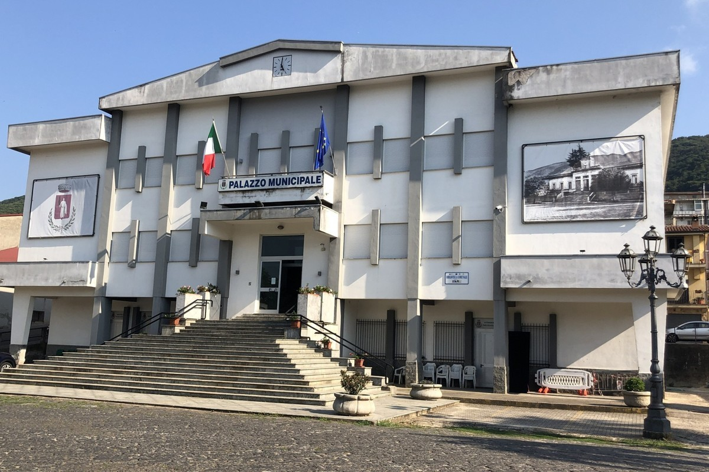

Mafia e antimafia · 7 novembre 2026
Processo Eyphemos, assolto in appello l'ex consigliere Domenico Creazzo

Nell'appello bis la Corte d'appello di Reggio Calabria assolve l'ex consigliere regionale e il fratello Antonino dall'accusa di scambio elettorale politico-mafioso. La sentenza non è definitiva: le motivazioni entro novanta giorni.
di Franco Zanghì
Il 6 novembre 2026 la Corte d'appello di Reggio Calabria, nel processo d'appello bis dell'inchiesta Eyphemos, ha assolto l'ex consigliere regionale Domenico Creazzo dall'accusa di scambio elettorale politico-mafioso. Con lui è stato assolto il fratello, Antonino. È l'ultimo passaggio di una vicenda giudiziaria passata da un'assoluzione a una condanna e poi di nuovo a un'assoluzione.
L'arresto dopo le regionali del 2020
Domenico Creazzo era sindaco di Sant'Eufemia d'Aspromonte, in provincia di Reggio Calabria. Alle regionali del gennaio 2020 fu eletto in Consiglio regionale con Fratelli d'Italia; pochi giorni dopo, a febbraio, fu arrestato insieme al fratello nell'inchiesta Eyphemos della Direzione distrettuale antimafia di Reggio Calabria, che secondo gli inquirenti riguardava la cosca Alvaro di Sinopoli.
Secondo l'accusa, Creazzo avrebbe accettato una promessa di voti per le regionali, passata attraverso il fratello Antonino e fatta da un uomo che gli inquirenti ritenevano legato alla cosca.
Dall'assoluzione alla condanna, e ritorno
In primo grado Domenico Creazzo fu assolto. In appello la sentenza si ribaltò, con una condanna a dieci anni per lui e per il fratello. La Cassazione ha poi annullato quelle condanne e ha rinviato tutto a un nuovo processo d'appello.
Nell'appello bis la Corte ha assolto i due fratelli Creazzo e, secondo le testate, altri due imputati, uno dei quali era stato condannato in precedenza a tredici anni. Per l'uomo che, secondo l'accusa, avrebbe promesso i voti cade lo scambio elettorale; resta la sua condanna per associazione mafiosa, a vent'anni e tre mesi, non definitiva.
Che cos'è un appello bis
Quando la Cassazione annulla una sentenza d'appello non decide nel merito: non dice se l'imputato è colpevole o innocente. Dice che il ragionamento del giudice precedente non regge su uno o più punti, e rimanda il processo a un'altra sezione della stessa Corte d'appello, che deve rifarlo tenendo conto di quelle indicazioni. È quello che si chiama appello bis.
In questa vicenda il percorso è stato lungo: arresto nel febbraio 2020, assoluzione in primo grado, condanna a dieci anni in appello, annullamento in Cassazione e ora una nuova assoluzione. Sei anni e tre decisioni diverse sugli stessi fatti.
Che cosa succede adesso
Le motivazioni saranno depositate entro novanta giorni. La sentenza non è definitiva e potrà essere impugnata in Cassazione. Per tutti gli imputati di questo processo vale la presunzione d'innocenza fino alla sentenza definitiva.
Fonti
- Ansa, «'Ndrangheta, assolto in appello bis ex consigliere Calabria Domenico Creazzo», 6 novembre 2026
- Il Fatto Quotidiano, «Processo Eyphemos, in appello bis assolto Domenico Creazzo», 6 novembre 2026
- Corriere della Calabria, 6 novembre 2026
- LaC News24, 6 novembre 2026
- StrettoWeb, 6 novembre 2026
Situazione giudiziaria aggiornata al 7 novembre 2026: sentenza d'appello bis non definitiva, motivazioni entro novanta giorni.
Questo articolo nasce dalla pagina Gli Eroi dell'Abisso, dove la stessa storia è raccontata in video.